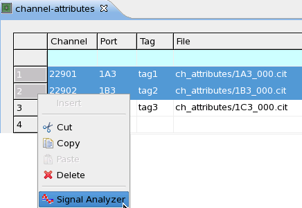

Displaying data in the signal analyzer tool You can plot De-embedding cit files on the signal analyzer tool. Procedure Select one or more rows of interest. Right-click the row. On the shortcut menu, select Signal Analyzer.  Signal Analyzer tool opens displaying the corresponding graph or graphs (see Elements of the Signal Analyzer Tool). Related informationChannel Attributes EditorElements of the Signal Analyzer ToolFixture Delay Tool Functional changesIntroduced in SmarTest 7.1.0